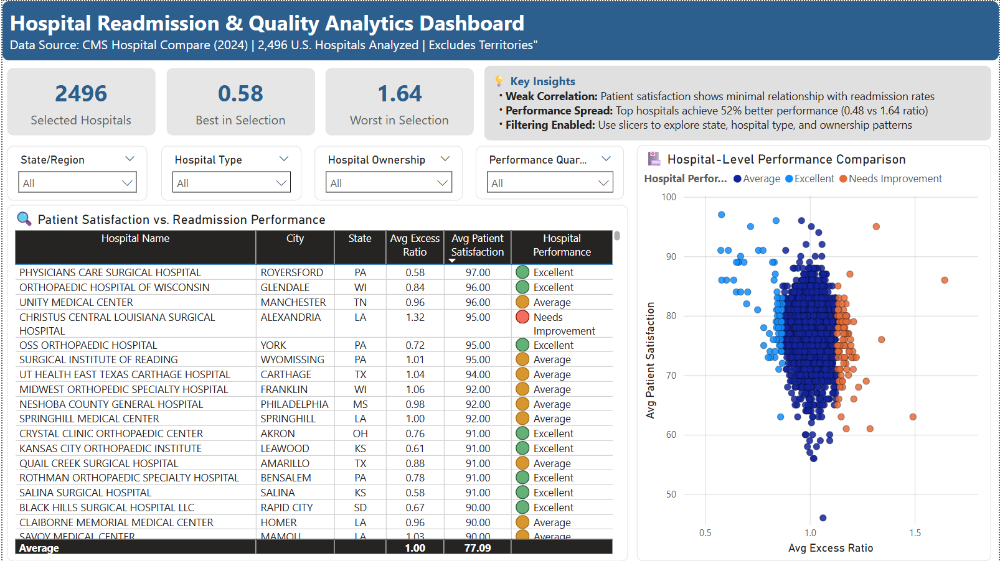
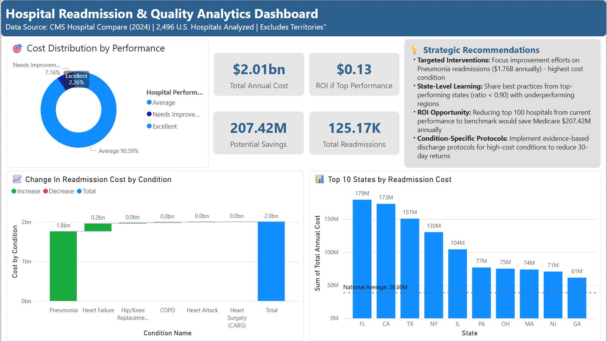

Hospital Readmission Analytics Dashboard
Comprehensive analysis of hospital readmission patterns across 2,497 U.S. hospitals using CMS (Centers for Medicare & Medicaid Services) data. This interactive dashboard identifies cost-saving opportunities, performance trends, and geographic disparities in healthcare quality metrics.
💡 Key Findings
- $4.2 billion potential Medicare savings identified through performance optimization
- 116% variation in hospital performance (0.48 to 1.64 excess readmission ratio)
- Geographic patterns reveal state-level disparities in readmission rates
- Heart failure represents highest cost condition for readmissions
Dashboard Pages
Page 1: National Overview

Geographic distribution, state rankings, and national performance metrics with interactive filters.
Page 2: Hospital Comparison
Hospital-level drill-down analysis with patient satisfaction correlation and performance categorization.
Page 3: Financial Impact
Cost analysis by condition and state, ROI opportunities, and strategic recommendations.
🛠️ Technical Implementation
- Data Sources: CMS Hospital Compare dataset (2024)
- Data Model: Star schema with 3 tables, optimized relationships
- DAX Measures: 15+ custom calculations including dynamic filtering, RANKX, AVERAGEX
- Visualizations: Maps, scatter plots, waterfall charts, conditional formatting
- Interactivity: Cross-filtering, slicers, drill-through navigation